Under double-blind review at ICLR 2027
RepStateDiff
Representation-Guided State Evolution for Image-Conditioned Point Cloud Reconstruction
Qualitative reconstruction
ShapeNet-R2N2
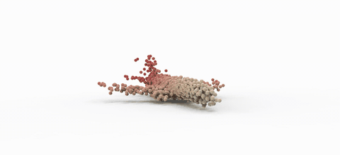
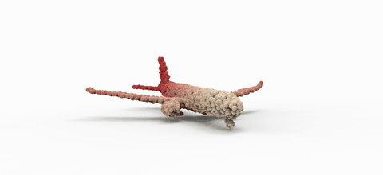
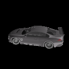
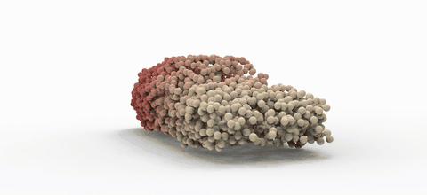
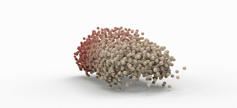
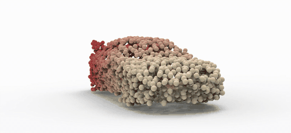
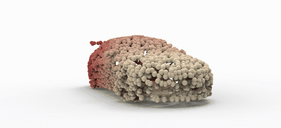
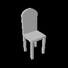
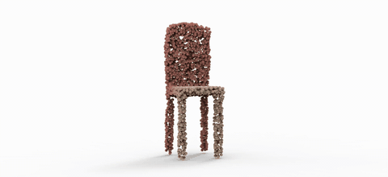
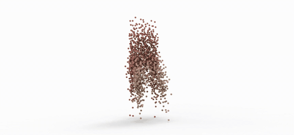
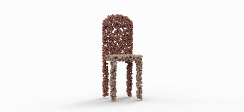
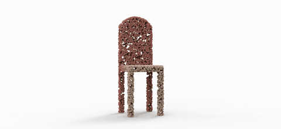
Pix3D
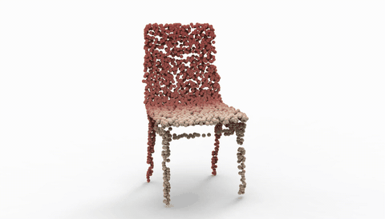
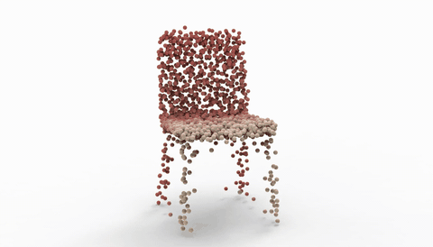
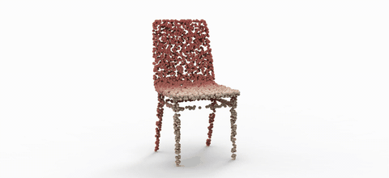
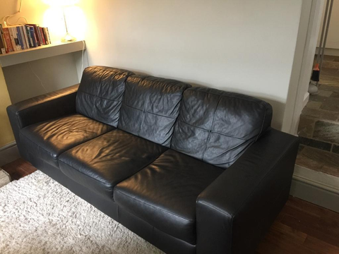
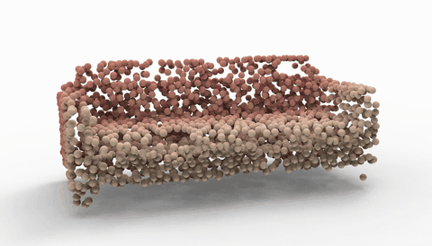
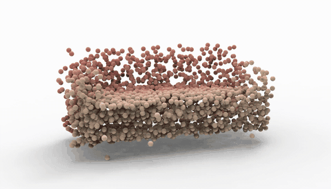
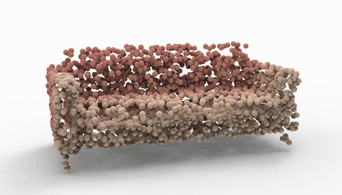
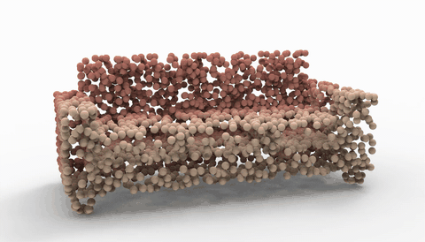
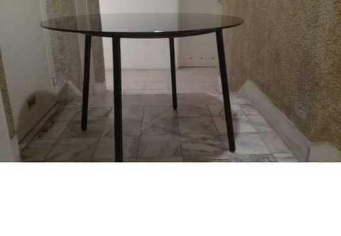
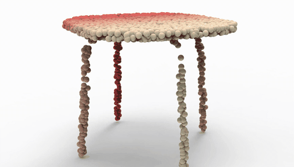
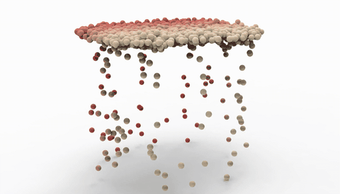
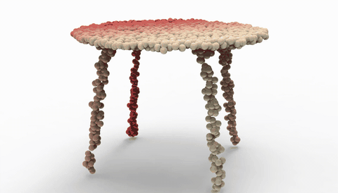
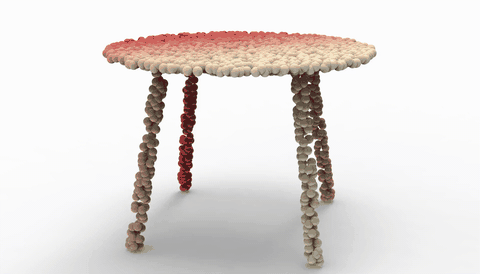
Overview
Representation guidance for state-evolution denoising
Single-view 3D reconstruction seeks to recover complete object geometry from a single RGB image, yet remains inherently ambiguous because the observation reveals only a partial, viewpoint-dependent surface. Diffusion models offer a flexible generative formulation for this task, but point-cloud denoising requires a coherent global shape hypothesis that can be selectively updated with local image evidence.
To address this challenge, we introduce RepStateDiff, a representation-guided conditional diffusion framework that formulates reconstruction as state-evolution denoising. By separating persistent shape retention from evidence-driven state updates, RepStateDiff preserves global structure while refining local geometry with image-aligned cues. It aligns frozen visual features with noisy 3D points and propagates hierarchical tokens through StateEvo, a linear-time sequence mixer; intermediate representation alignment and internal guidance further couple visual semantics to denoising.
On ShapeNet-R2N2 and Pix3D, RepStateDiff achieves the strongest F1-scores across most evaluated settings and remains robust even with merely 1% of training data. On the three primary ShapeNet-R2N2 categories at 10% training data, it improves mean CD/F1 over PDM from 66.09/0.525 to 56.34/0.582, while PDM retains faster inference.
Quality and efficiency under data scarcity
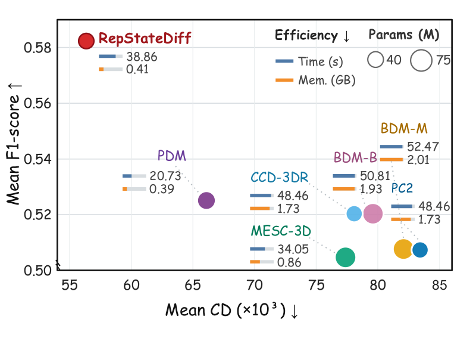
Quantitative results
ShapeNet-R2N2 reconstruction results
| Method | Chair | Airplane | Car | |||||||||||||||||||||
|---|---|---|---|---|---|---|---|---|---|---|---|---|---|---|---|---|---|---|---|---|---|---|---|---|
| 1% | 10% | 50% | 100% | 1% | 10% | 50% | 100% | 1% | 10% | 50% | 100% | |||||||||||||
| CD | F1 | CD | F1 | CD | F1 | CD | F1 | CD | F1 | CD | F1 | CD | F1 | CD | F1 | CD | F1 | CD | F1 | CD | F1 | CD | F1 | |
| PC2 (CVPR 23) | 108.61 | 0.381 | 97.25 | 0.393 | 73.58 | 0.437 | 65.57 | 0.464 | 117.09 | 0.579 | 88.00 | 0.605 | 76.39 | 0.628 | 65.97 | 0.655 | 66.34 | 0.509 | 64.99 | 0.524 | 62.59 | 0.542 | 64.36 | 0.547 |
| CCD-3DR (arXiv 23) | -- | -- | 89.79 | 0.418 | 63.13 | 0.474 | 58.47 | 0.498 | -- | -- | 81.29 | 0.612 | 72.46 | 0.635 | 62.77 | 0.651 | -- | -- | 63.13 | 0.531 | 62.25 | 0.550 | 61.88 | 0.562 |
| BDM-M (CVPR 24) | 107.66 | 0.382 | 94.94 | 0.395 | 71.56 | 0.446 | 64.48 | 0.468 | 117.42 | 0.580 | 87.75 | 0.604 | 73.19 | 0.629 | 65.16 | 0.653 | 66.56 | 0.509 | 63.53 | 0.524 | 60.71 | 0.549 | 64.16 | 0.554 |
| BDM-B (CVPR 24) | 107.64 | 0.3914 | 94.67 | 0.410 | 69.99 | 0.463 | 64.21 | 0.485 | 115.10 | 0.5878 | 83.62 | 0.612 | 68.66 | 0.641 | 59.04 | 0.660 | 65.27 | 0.5188 | 60.48 | 0.539 | 62.58 | 0.554 | 65.85 | 0.559 |
| MESC-3D (CVPR 25) | 192.32 | 0.2444 | 101.51 | 0.381 | 73.47 | 0.427 | 65.69 | 0.458 | 87.77 | 0.5013 | 74.31 | 0.611 | 51.28 | 0.619 | 50.54 | 0.714 | 70.32 | 0.4347 | 56.28 | 0.522 | 44.48 | 0.532 | 51.99 | 0.602 |
| PDM (ECCV 26) | 115.43 | 0.3702 | 82.41 | 0.419 | 68.85 | 0.465 | 62.14 | 0.488 | 92.63 | 0.5619 | 60.64 | 0.614 | 50.14 | 0.663 | 48.66 | 0.719 | 61.58 | 0.5084 | 55.23 | 0.542 | 55.53 | 0.558 | 51.54 | 0.607 |
| RepStateDiff (Ours) | 97.76 | 0.405 | 64.96 | 0.481 | 50.50 | 0.525 | 46.38 | 0.541 | 92.72 | 0.599 | 50.66 | 0.691 | 40.54 | 0.732 | 37.55 | 0.743 | 62.53 | 0.519 | 53.42 | 0.575 | 50.84 | 0.610 | 50.11 | 0.618 |
Table 1. ShapeNet-R2N2 results on the three primary categories. CD is multiplied by 103; lower CD and higher F1 are better. Bold marks the best value and underlining marks the second-best value within each metric column. A dash indicates an unavailable baseline result.
Additional visualizations
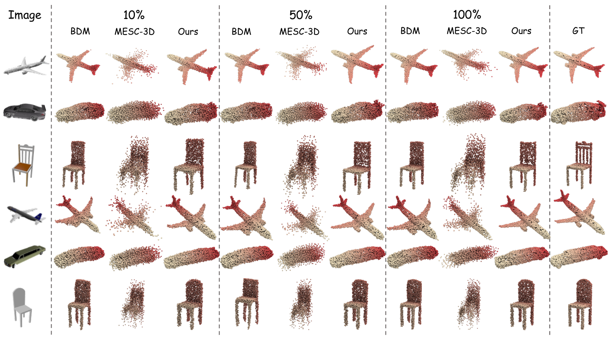
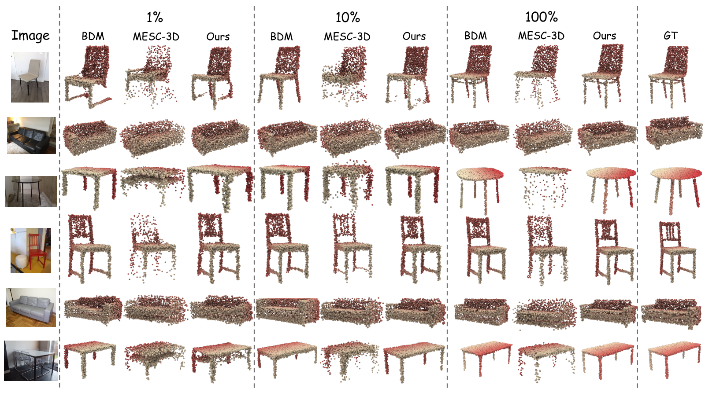
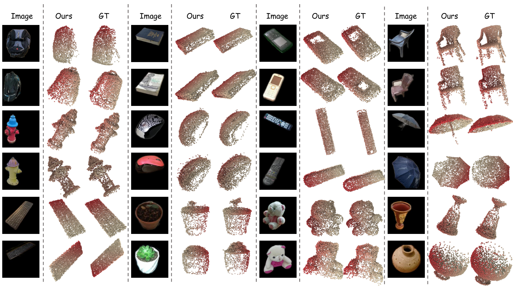